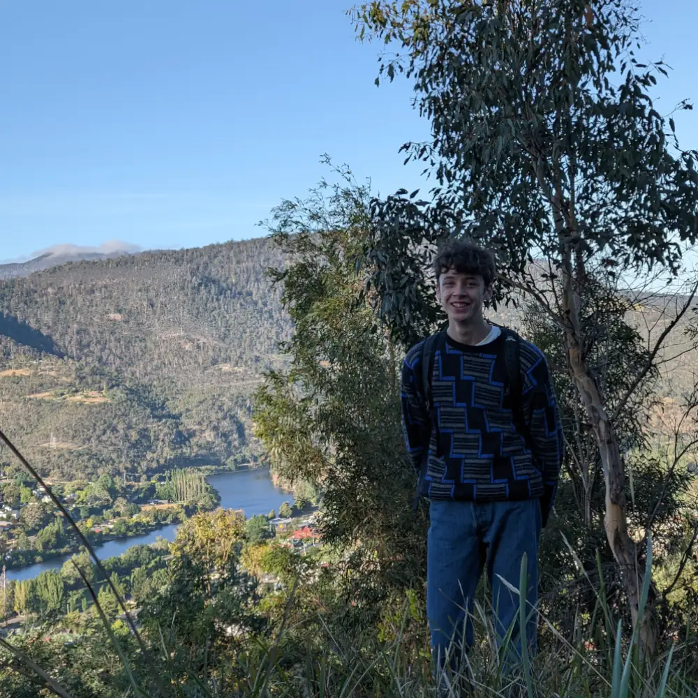

Hi! I'm Will. I lived in Tasmania my whole life and I have a passion for good website design. I've built a couple of websites but I'm still pretty new to it. My most colossal achievement in website development was building my first website (this one) in HTML and Tailwind CSS (which is a little basic, but here we are). I'm also good at other things, like video editing and some programming. I'm looking to learn JS and Svelte, and in the far future maybe even Web assembly (crazy).
I've been at The Friends' School for high school. Currently, I'm doing the IB Diploma programme in Clemes (a part of The Friends' School). In the future, I want to go to Monash University and pursue design of some kind.
As far as experience goes, I've done some short work experience at a local web design studio, Ionata Digital and I've built a full website on Webflow, with a CMS for Valleyfield. As well as personal projects here and there. Working with a client for the first time was an extremely valuable experience in terms of getting to know how the client-developer/designer relationship goes. I'm looking to take this forward into my future ventures.
Design and front end web development is my forte! I haven’t been doing it long but I have built a couple of sites and I really love it. I’m at home in Webflow, but I know vanilla HTML and CSS (and a bit of Tailwind - which I built this in).
I have always enjoyed working in a team of motivated individuals. I find that a concrete plan and good discussion goes a long way in making sure everyone is on the same page and that a team is working! The key to teamwork though is knowing your teams capabilities and personalities.
Experience with Premiere Pro, Photoshop, Illustrator and Adobe XD.
I’ve used it for most of my schooling and it’s safe to say I’m a bit of a pro. 😎
I’ve used computers a lot and know how they work. I don’t have too much trouble learning new things either!
I know Figma and I am proficient in Da Vinci Resolve - espeically Fusion